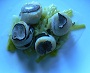

Nage de saint-Jacques aux truffes
Ingrédients
- 6 coquilles Saint-Jacques
- 1 poireau
- du beurre
- 16 cl de fumet de poisson
- 2 truffes en conserves
Préparation

- Rincez les coquilles afin d'éliminer le sable résiduel, puis épongez-les sur un linge.
- Ouvrez le poireau en 4 dans le sens de la longueur et lavez-les bien, puis émincez-les en fine julienne.
- Faites fondre le beurre dans une marmite, saisissez la julienne de poireau puis faites revenir le tout pendant 1 minute sans coloration.
- Mouillez les poireaux avec le fumet et faites cuire 20 mn à petite ébullition.
- Émincez les noix en 2 ou 3 selon l'épaisseur, intercalez-y les rondelles de truffe et ajoutez-les au bouillon de poireau. Faites cuire le tout pendantr 1 minute.
- Quand les poireaux sont cuits, faire fondre le beurre dans une poêle chaude et faire revenir les coquilles 1 min par face.
- Dresser les assiettes en posant les Saint-Jacques sur un nid de poireaux.